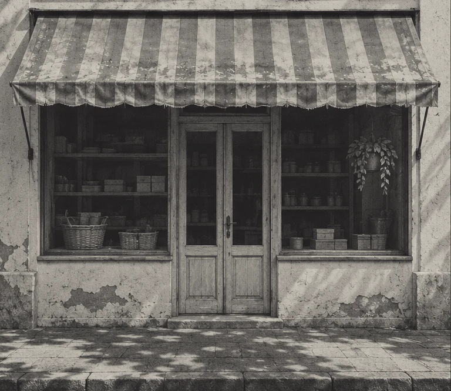

Consultoria de marca
PARE DE PEDIR
PERMISSÃO
AO MERCADO.
Eu moldo a sua marca para ser desejada e vender mais. Consultoria que estrutura a experiência do cliente, do primeiro contato ao pós-venda.
Iniciar diagnóstico gratuitoSua marca pode ocupar outro lugar
CHEGA DE VENDER POUCO.

ANTESDEPOIS
TENHA UMA MARCA TÃO IRRESISTÍVEL QUE O CLIENTE PAGA O PREÇO CHEIO.
SE A SUA MARCA ESTÁ ASSIM...
Vende barato enquanto o concorrente fica com a fama e o cliente.
Só atrai quem pergunta o preço e perde quem paga.
O QUE TRAVA A SUA MARCA
TALVEZ O PROBLEMA NÃO SEJA A FALTA DE CLIENTES
DIFERENÇA:
podem estar faltando motivos para escolher você.
VENDA:
falta um processo que transforme interesse em vendas.
OS 3 PILARES DE UMA MARCA DESEJADA
O QUE FAZ UMA MARCA SER ESCOLHIDA?
POSICIONAMENTO
Uma razão clara para o cliente escolher a sua marca.
EXPERIÊNCIA
Valor percebido em cada contato com o seu negócio.
CONVERSÃO
Um processo comercial que transforma interesse em vendas.
Clareza antes de movimento
COMO EU FAÇO ISSO NA PRÁTICA
RAIO-X
Entender sua marca, seu cliente e o que trava a venda.
ARQUITETURA
Definir posicionamento, experiência e processo comercial.
IMPLEMENTAÇÃO
Colocar o plano em prática e preparar o time para executar.
Resultado: marca desejada no mercado, time treinado e mais vendas.
Quem sou eu
MARCA BONITA QUE NÃO VENDE É DECORAÇÃO.
Sou Vinicius Ribeiro. Trabalho com marca e vendas para construir uma razão clara de escolha e transformar essa escolha em experiência, relacionamento e venda.
ESPAÇO RESERVADO
Números e resultados
ESPAÇO RESERVADO
Casos e transformações
ESPAÇO RESERVADO
Clientes e marcas
Para negócios que querem mais
PARA QUEM É
Para quem quer transformar uma boa marca em uma escolha clara para o cliente.
Iniciar diagnóstico gratuito- Atrair os clientes certos.
- Vender sem depender de desconto.
- Parar de deixar dinheiro na mesa.
- Sair do improviso na hora de vender.
Se você reconheceu seu negócio aqui, o próximo passo é entender o que precisa mudar.
Antes da nossa conversa
PERGUNTAS FREQUENTES
Espaço reservado para explicar o diagnóstico inicial.
Espaço reservado para detalhar as entregas de cada etapa.
Espaço reservado para esclarecer os requisitos para começar.
Espaço reservado para informar os negócios atendidos.